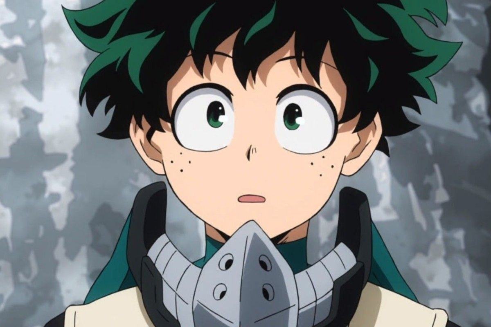
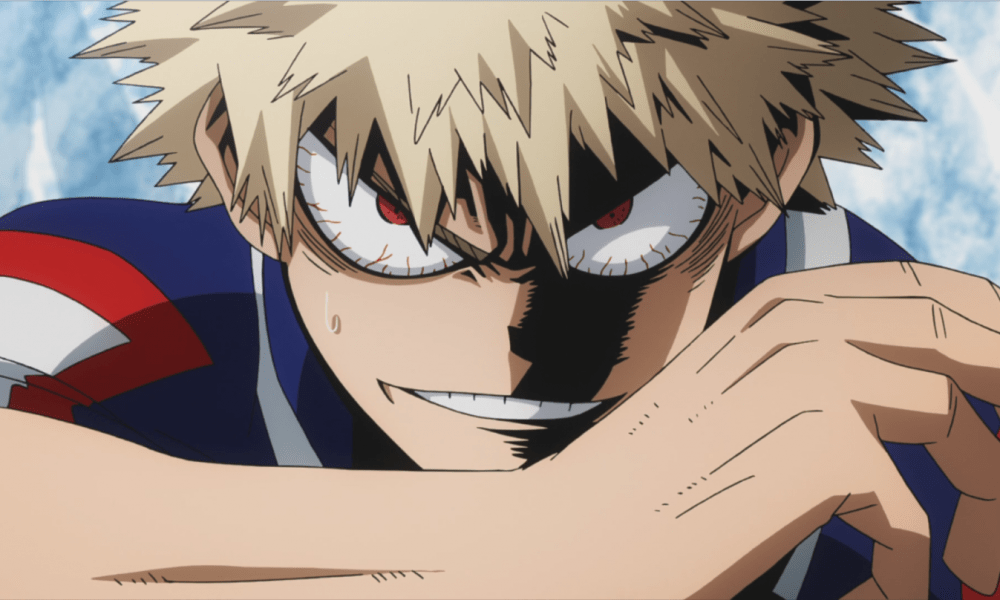
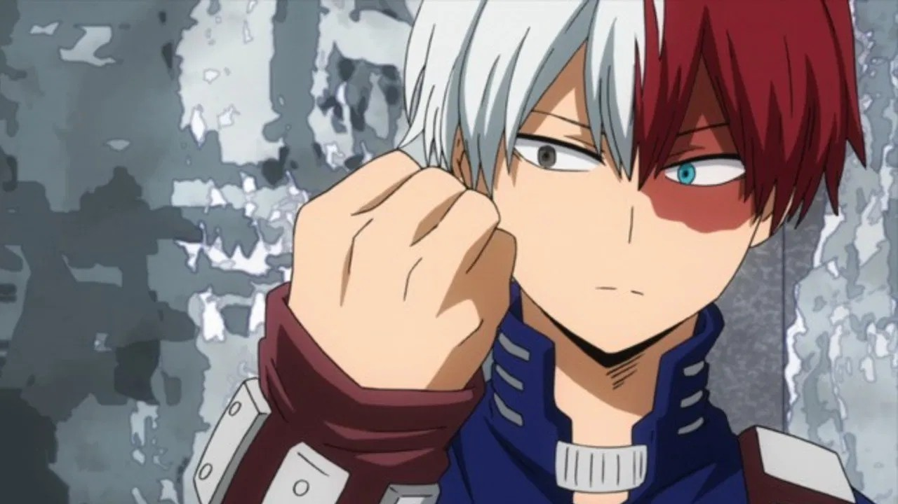
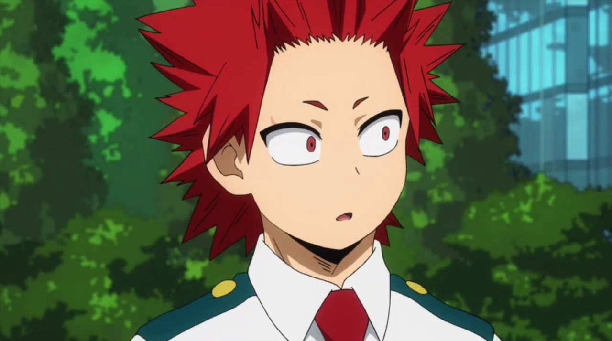
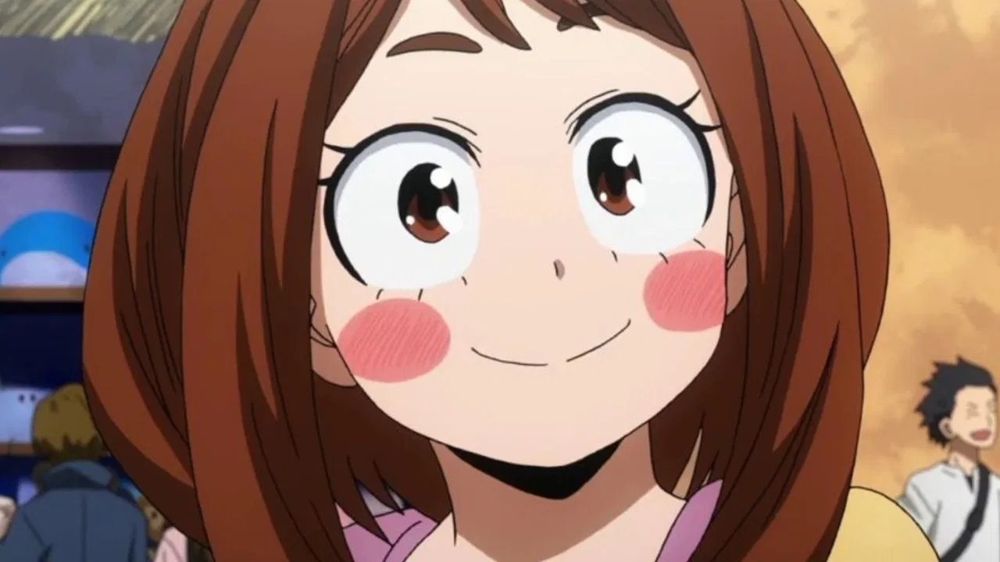
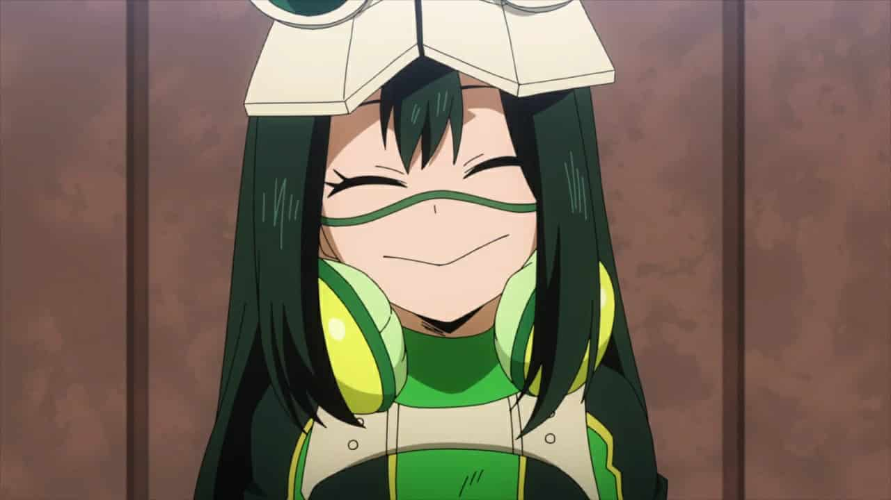
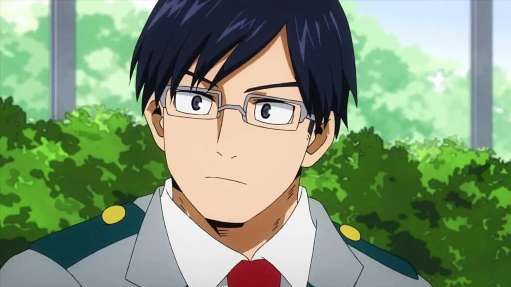
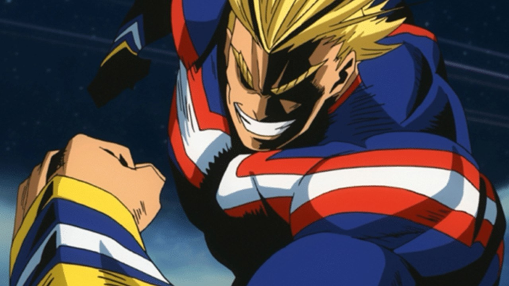
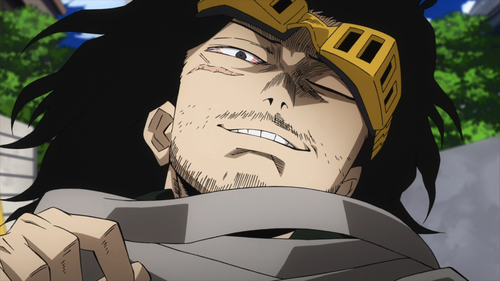
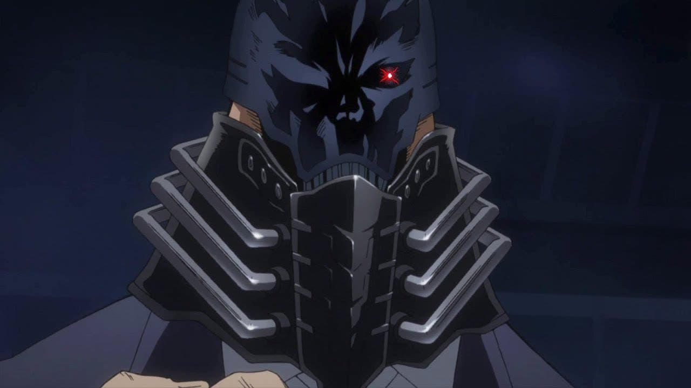

Sinopsis:
Se mostrará un breve resumen del enfoque de la trama de esta serie animada japonesa "Anime" basada en un manga escrito por Kōhei Horikoshi
Los súperpoderes forman parte de cada personaje presente en la historia de Boku no Hero Academia, entre los cuales se clasifican en héroes, para defender la nación de todos los ataques auspiciados por el mal y los villanos, quienes buscan el objetivo opuesto de dichos héroes. No obstante, no todos los ciudadanos podían contar con súperpoderes, ya que Midoriya Izuku soñaba con algún día tenerlos, para ser el mejor de los héroes. Si te interesa conocer otras historias que no abarcan los mangas ni animes, entonces puedes recurrir a Los Vengadores para que logres conocer su argumento, películas y todos sus personajes.
Uno de los grandes deseos de Izuku es conocer a un legendario héroe llamado All Might, egrsado con honores de la U.A (una academia capacitada para instruir a poderosos héroes que puedan ser capaces de defender al mundo de toda maldad y peligro). Un buen día, Izuku realiza su mayor sueño de conocer a su ídolo hasta el punto de emocionarse. All, al ver la buena disposición de Midoriya, le promete que le facultará de superpoderes para ser un héroe más. De igual modo, no te puedes perder por nada del mundo la tercera parte de la vida y obra del Hombre Araña mediante Spider Man 3.
All Might ayuda a Izuku para que pueda estudiar en la misma Academia donde se preparó, en la U.A. Una vez allí, Izuku puede conocer sus nuevos poderes en Boku no Hero Academia. Eso sí, el protagonista debe cuidarse las espaldas a lo largo de la historia, ya que los enemigos poco a poco irán en aumento por el sentimiento de la envidia que provoca sus asombrosos poderes. Entre otros personajes poderosos que se han ganado su lugar como los más legendarios, están los X-Men, que vale la pena conocer todo lo que no sabías sobre ellos.
Personajes principales
Se enlistarán una serie de personajes principales pertenecientes a la trama del anime
Deku
Izuku Midoriya es el protagonista de la serie. Es un joven que nació sin habilidades especiales, un caso raro de 1% de la población. No obstante, luego de un encuentro fortuito con All Might, su héroe de la infancia, heredó un poder que puede ser entregado a alguien más, One for All. Esta habilidad incluye súper-fuerza y resistencia al dolor.

Bakugou
Es un conocido de la infancia de Midoriya, y un abusón engreído desde que eran niños. Bakugou es un personaje que cuenta con la habilidad de transformar su sudor en nitroglicerina y generar explosiones controladas y desmesuradas dependiendo de sus intenciones. Es uno de los personajes con mayor control y conocimiento de su propia habilidad, siendo un verdadero rival para Midoriya.

Todoroki
Todoroki es el hijo del héroe No. 2 en la clasificación oficial, conocido como Endeavor. Nacido de un matrimonio por conveniencia para mezclar habilidades entre sí, el joven es el "experimento" perfecto para su padre, que buscaba crear un balance entre su habilidad, la llama infernal, y la de su esposa, que era un quirk de hielo. Gracias a esto, la mitad de su cuerpo puede encenderse como una llama y ser utilizada también como proyectil, mientras que la otra mitad puede crear estructuras de hielo controladas e incluso lluvias de carámbanos.

Kirishima
Kirishima es joven cuya habilidad especial consiste en endurecer su piel hasta convertirla en una piedra, habilidad que ha ido llevando al límite para mejorarla y explandirla para volverse "irrompible". Kirishima admira la caballerosidad y el buen comportamiento sobre todas las cosas, y se vuelve un buen amigo de Midoriya por sus cualidades heroicas y gran voluntad.

Uraraka
Uraraka es una de las primeras personas que le muestra amabilidad a Midoriya cuando llega a la academia UA, y gracias a ella, pudo demostrar sus tendencias heroicas al sacrificar su puntaje para salvarle la vida. Debido a este suceso, Uraraka se vuelve una gran amiga del chico y comienza a admirar su voluntad y ganas de salir adelante. Su habilidad consiste en hacer objetos y personas flotar cuando los toca. Incluso, puede flotar ella misma, pero suele sufrir de mareos.

Tsuyu
Uraraka es una de las primeras personas que le muestra amabilidad a Midoriya cuando llega a la academia UA, y gracias a ella, pudo demostrar sus tendencias heroicas al sacrificar su puntaje para salvarle la vida. Debido a este suceso, Uraraka se vuelve una gran amiga del chico y comienza a admirar su voluntad y ganas de salir adelante. Su habilidad consiste en hacer objetos y personas flotar cuando los toca. Incluso, puede flotar ella misma, pero suele sufrir de mareos.

Lida
Iida es el hermano menor de un héroe registrado llamado Ingenium, que cuenta con una habilidad similar a la de él. Es un muchacho extremadamente aplicado e inteligente, pero a veces demasiado cuadrado en su manera de pensar, lo que lo hace muy estricto y "poco divertido". Su habilidad especial hereditaria le otorga un motor interno en las piernas, ubicado justamente en sus pantorrillas que le permiten andar con mucha velocidad y, para utilizarlo como arma, dar patadas muy fuertes.

AlL Might
Es el antiguo símbolo de la paz y héroe número uno, un personaje sin igual que se dedicó durante toda su carrera a acabar con el crimen organizado. También ejerce un papel como profesor en la academia U.A. para el curso de héroes. Es el responsable tras la habilidad que hereda Deku, pues fue él quien tomó la decisión de entregarle One for All.

Aizawa
Héroe registrado profesional, encargado de la clase 1-A. Es un profesor severo y reservado, pero muy en el fondo se preocupa profundamente por sus alumnos y aspira a verlos crecer y mejorar en sus habilidades. Tiene la peculiaridad de decir exactamente lo que siente y mostrarse apático ante muchas situaciones, incluyendo durante sus clases.

All For One
El símbolo de la maldad y archienemigo de All Might. Shigaraki, mejor conocido como All for One, es el villano más poderoso de toda la serie. Su identidad es desconocida, igual que sus intenciones. No obstante, escogió a Tomura Shigaraki como su sucesor. Su habilidad parece ser (puesto que aún no se ha visto todo lo que es capaz de lograr) tomar las habilidades de las personas y mezclarlas para utilizarlas de manera ofensiva o defensiva, dependiendo del requerimiento que tenga.

Este es el orden correcto si quieres disfrutar de esta maravillosa serie de anime
Puedes tocar el nombre de cada temporada y extras para ir a JKAnime a ver los episodios
Esta temporada tiene un total de 13 episodios.
Esta temporada tiene un total de 25 episodios y un ova antes del episodio después del episodio 20
La película tiene lugar tras el arco del examen final, en verano, pero antes del arco de entrenamiento del bosque. Asimismo, resulta muy interesante porque nos cuenta más información del pasado de All Might.
Esta temporada cuenta con 25 episodios.
Esta temporada cuenta con 25 episodios.
Esta temporada cuenta con 25 episodios